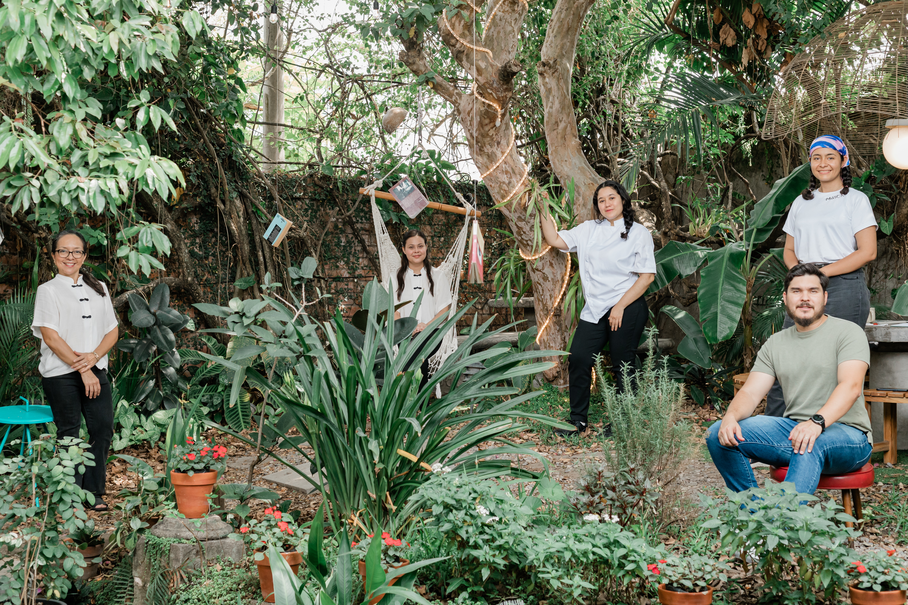
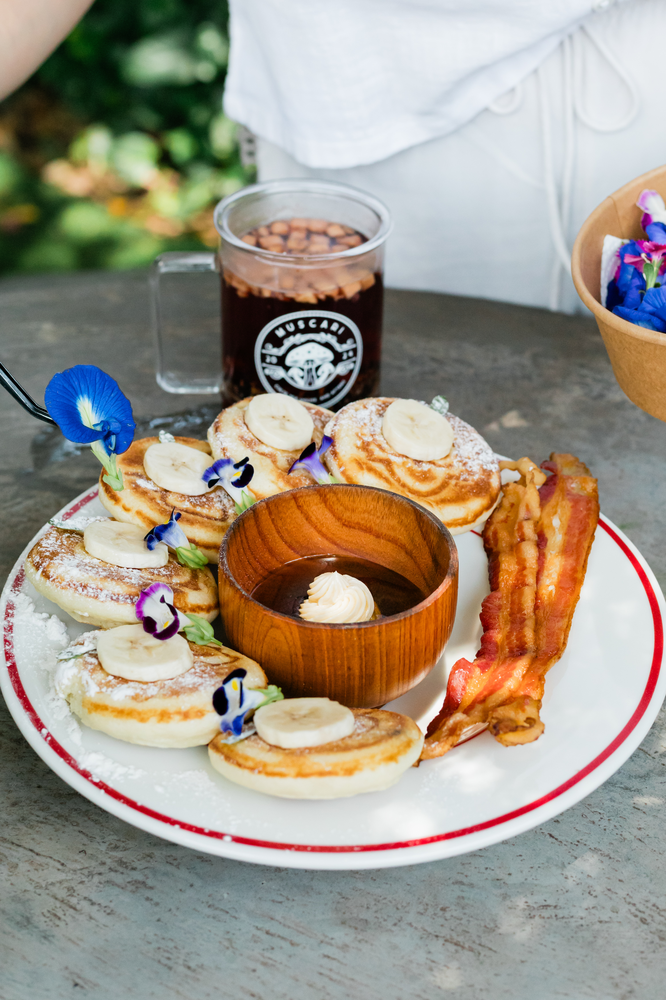
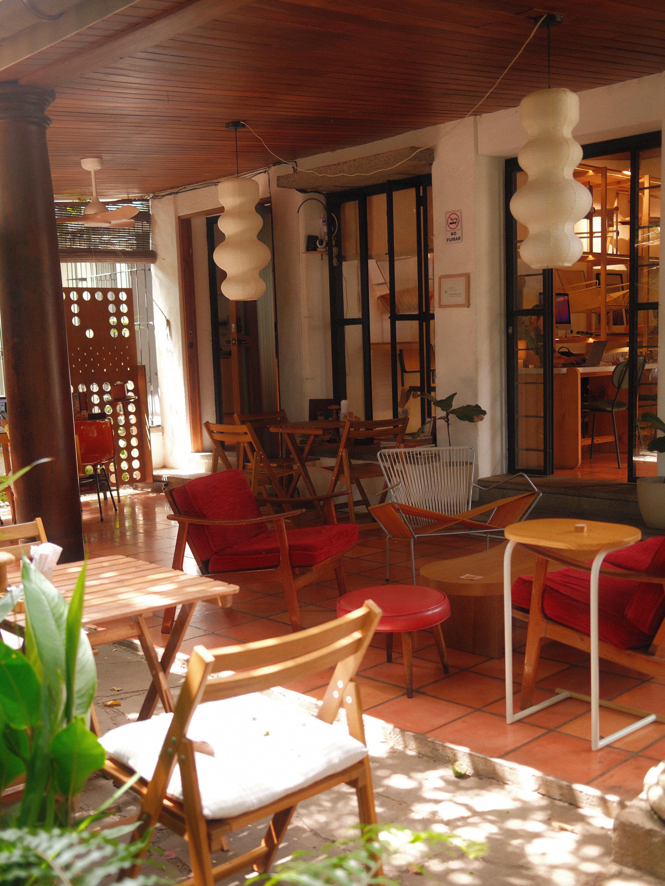
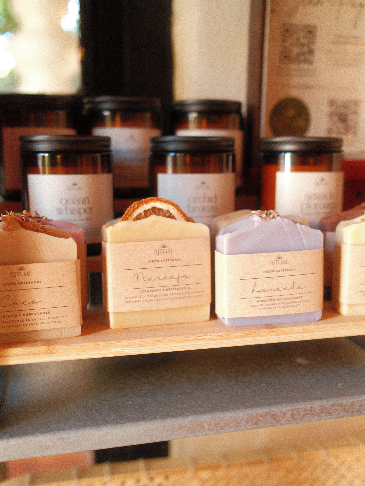
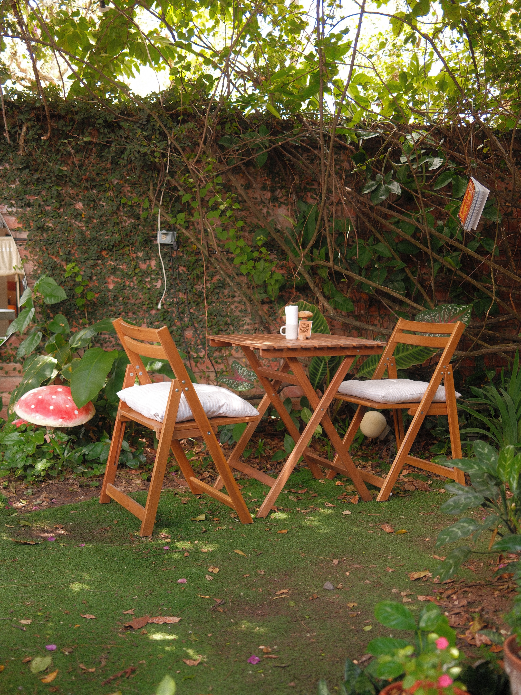
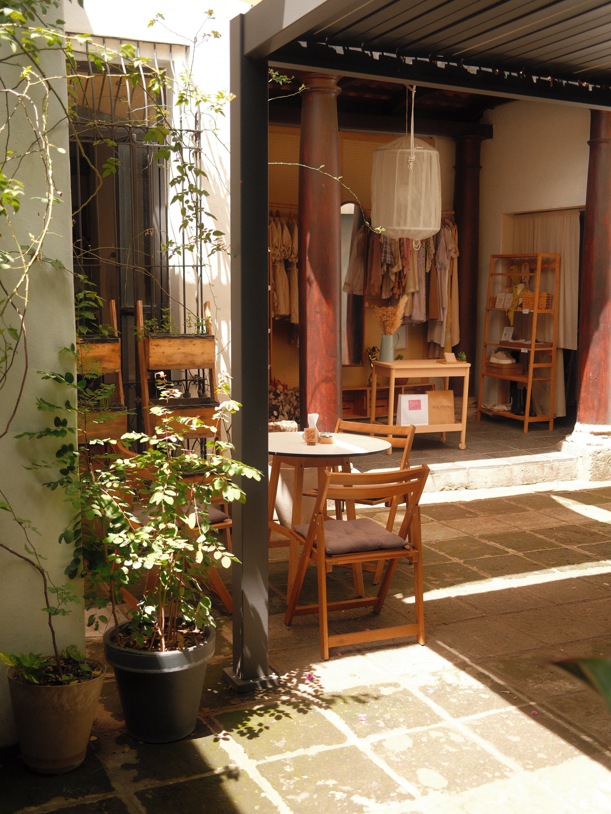

Muscari
Un espacio para disfrutar el momento, compartir y conectar con un ambiente diferente dentro de San Salvador.
Un jardín para quedarse un rato más
Muscari reúne una cafetería, una casa de té, un jardín y un espacio para celebrar. Muros de cal, pisos de barro, columnas antiguas y mesas bajas donde el tiempo se mide en tazas.


Café y té
Una barra de café y una casa de té bajo el mismo techo.
El jardín
Mesas entre hiedra y helechos, una hamaca y la sombra de los árboles.
Encuentros
Terrazas, patios y rincones para conversar sin prisa o celebrar.
Música
Experiencias como The Listening Room, que reunió música, té y gastronomía.

De la barra
a la mesa
Cocina de bistró con acento franco-japonés, café preparado en barra y té servido con calma.

Luz de patio,
sombra de árbol
Del sol de la mañana en el patio a las lámparas encendidas por la tarde.





Música, té
y buena mesa
Muscari también es un lugar de encuentro. En The Listening Room, la música, el té y la gastronomía compartieron la misma mesa. Consulta la agenda para conocer las próximas experiencias.